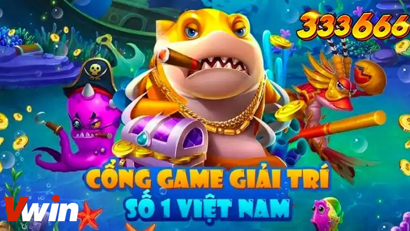
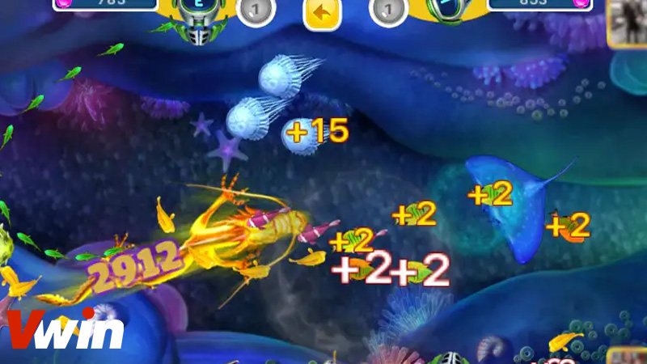

.png)
ĐÃ ĐĂNG TRÊN THÁNG BA 1, 2024 BỞI Vwin

Tham gia vào thế giới của game bắn cá đổi thưởng không chỉ là một trải nghiệm thú vị mà còn là một cơ hội để trải nghiệm những phần thưởng hấp dẫn. Dù đã trở nên phổ biến với cộng đồng người chơi game online, việc hiểu rõ về cách thức hoạt động và các tính năng đặc biệt của game bắn cá vẫn là một thách thức đối với nhiều người. Hãy cùng Bắn cá Vwin tìm hiểu và khám phá những điều thú vị về trò chơi đang làm mưa làm gió này.
Game bắn cá đổi thưởng không còn xa lạ với cộng đồng cá cược trên thị trường, nó đã trở thành một trò chơi giải trí hấp dẫn, mang lại sự thư giãn và tiện lợi cho người chơi. Nhiều nhà cái đã áp dụng mô hình này để thu hút và nâng cao trải nghiệm của người dùng.
Khám phá trải nghiệm của game bắn cá đổi thưởng
Trong trò chơi này, người chơi như được biến thân thành những kình ngư mạnh mẽ, chinh phục những con cá đa dạng để nhận được các phần thưởng hấp dẫn. Đây không chỉ là một trò chơi dễ chơi mà còn có thể mang lại cho bạn những khoản thưởng đáng giá.
Ngoài ra, hình ảnh và màu sắc trong game bắn cá online cũng rất bắt mắt và đẹp mắt. Người chơi sẽ có cảm giác như đang lạc vào một thế giới đại dương xanh mát, với sự đa dạng về hình dáng, màu sắc và kích thước của các loài cá.
Trong thế giới của các trò chơi đổi thưởng, ăn xu hay các trò chơi khác, để giành chiến thắng khi chơi, bạn cần có kinh nghiệm chơi và áp dụng những mẹo chơi phù hợp. Nhà cái Vwin chia sẻ với bạn một số mẹo để giúp bạn có thể bắn cá một cách hiệu quả và đạt được nhiều phần thưởng hơn.
Hãy chọn cấp độ bàn chơi phù hợp
Việc lựa chọn cấp độ bàn chơi phù hợp là rất quan trọng, phụ thuộc vào ngân sách và kinh nghiệm của bạn. Mỗi cấp độ trong game bắn cá đổi thưởng đều có mức giá viên đạn bắn ra khác nhau. Nếu bạn mới bắt đầu hoặc có ngân sách hạn chế, thì nên bắt đầu ở các cấp độ thấp hơn. Điều này sẽ giúp bạn làm quen với trò chơi mà không phải chịu áp lực lớn và giảm thiểu nguy cơ mất cược khi chơi.
Một trong những chiến thuật hiệu quả khi chơi bắn cá đổi thưởng là sử dụng chiến thuật tăng đạn một cách thông minh. Thay vì sử dụng đạn một cách lãng phí, người chơi có thể tăng số lượng đạn từ từ theo thời gian. Ví dụ, bạn có thể bắt đầu bằng việc sử dụng 1 viên đạn để tiêu diệt 10 chú cá, sau đó tăng số lượng đạn lên dần dần.
Khi bạn đã bắn đến viên đạn thứ 100, chi phí chỉ là 558 điểm, nhưng khả năng tiêu diệt cá lại rất lớn, có thể lên đến 1000 điểm. Điều quan trọng nhất là bạn phải biết cách tăng đạn đúng thời điểm để có thể kiếm được số lượng xu hấp dẫn và đồng thời tiết kiệm chi phí đạn.
Rất nhiều người chơi thường mắc phải sai lầm là tập trung quá nhiều vào việc tiêu diệt những chú cá lớn hoặc boss khổng lồ mà bỏ qua các con cá nhỏ. Tuy nhiên, đây là một chiến thuật không hiệu quả vì nó mang lại rủi ro cao và dễ khiến bạn tiêu hao nhiều đạn mà không có nhiều thành công.
Sử dụng chiến thuật bắn ria
Một cách chơi bắn cá đổi thưởng hiệu quả nhất là tận dụng góc nhỏ của máy bắn để có thể tiêu diệt nhiều con cá nhỏ cùng một lúc. Thay vì tập trung vào một góc đặc biệt, bạn có thể áp dụng chiến thuật bắn ria bằng cách liên tục xoay nòng súng quanh bàn bắn cá.
Sau đó, hãy bắn từng viên đạn một ra mỗi hướng khác nhau một cách chậm rãi. Việc này sẽ tăng khả năng tiêu diệt từng con cá với mỗi viên đạn. Đối với các boss lớn, bạn có thể sử dụng 2-3 viên để tiêu diệt.
Thay vì dùng 10 viên đạn chỉ để tập trung vào bắn cá lớn với khả năng thành công thấp, chiến thuật bắn ria sẽ giúp bạn tiêu diệt nhiều cá nhỏ hơn, đồng thời vẫn có cơ hội bắn được các con cá lớn. Điều này sẽ mang lại cho bạn số lượng xu cao hơn và cơ hội chiến thắng lớn hơn.
Trong thế giới của game bắn cá đổi thưởng, chiến thuật bắn răng bi được coi là một trong những chiến thuật hiệu quả nhất để tăng khả năng hạ gục các con cá mục tiêu. Điều đặc biệt ở chiến thuật này là khả năng sử dụng đạn của bạn một cách thông minh, tận dụng sự phản xạ của tường để tạo ra hiệu ứng đánh trả lại, từ đó tăng cường sức mạnh tấn công của bạn.
Khi sử dụng chiến thuật bắn răng bi, bạn sẽ bắn đạn vào các bề mặt tường phía sau các con cá mục tiêu. Khi đạn đụng vào tường, nó sẽ phản xạ lại và bay trở lại với hướng ngược lại. Lúc này, con cá mục tiêu sẽ tiếp tục di chuyển, và đạn phản xạ sẽ tạo ra một mũi tấn công đối với con cá đó từ một góc độ không ngờ.
Điểm mạnh của chiến thuật này là khi con cá bị đạn phản xạ tấn công, bạn có thể tiếp tục bắn đạn trực tiếp vào con cá đó. Việc này khiến con cá phải đối mặt với sự tấn công đồng thời từ hai hướng, tăng cường khả năng gây sát thương và nhanh chóng hạ gục con cá đó.
Tuy nhiên, việc thực hiện chiến thuật này đòi hỏi sự khéo léo và kỹ năng của người chơi. Bạn cần phải có một sự nhạy bén trong việc đánh giá góc độ và sức mạnh của đạn, cũng như sự kiên nhẫn và kỹ năng đoán định của mình để tận dụng tốt nhất sự phản xạ của tường.
Trên đây là một số kỹ thuật chơi game bắn cá đổi thưởng dành cho người mới để giúp bạn tiết kiệm xu một cách hiệu quả nhất, tối ưu hóa cơ hội để kiếm được số tiền lớn và tránh lãng phí không cần thiết. Hy vọng rằng những chia sẻ này từ Bắn cá Vwin sẽ giúp bạn đạt được thành công trong trò chơi bắn cá đổi thưởng này. Hãy ghi nhớ và áp dụng chúng vào trò chơi một cách thông minh nhất!
Vwin được công nhận là nhà cái cá cược hợp pháp - an toàn. Vwin còn có trụ sở chính và cá cược trực tiếp tại Phú Quốc.